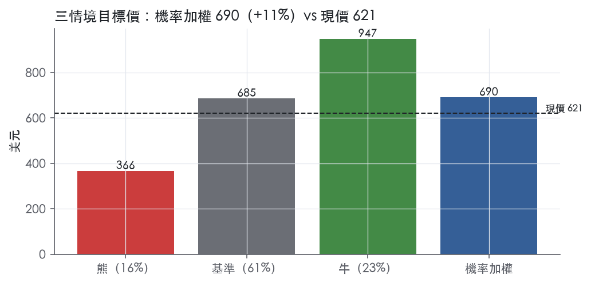
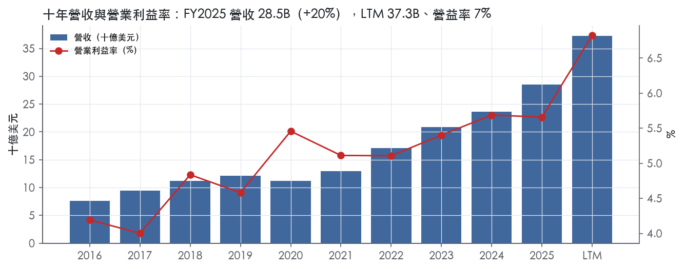
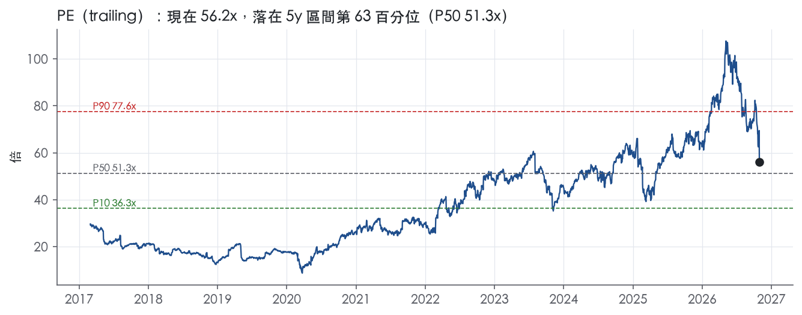
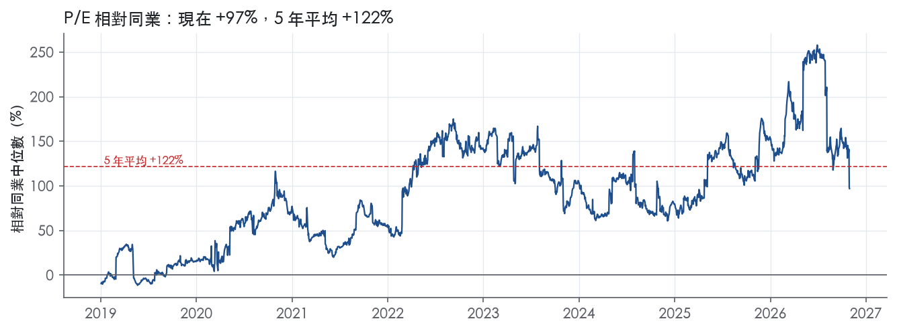
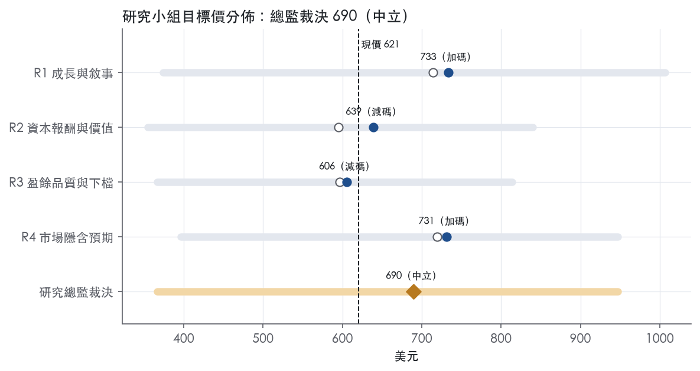
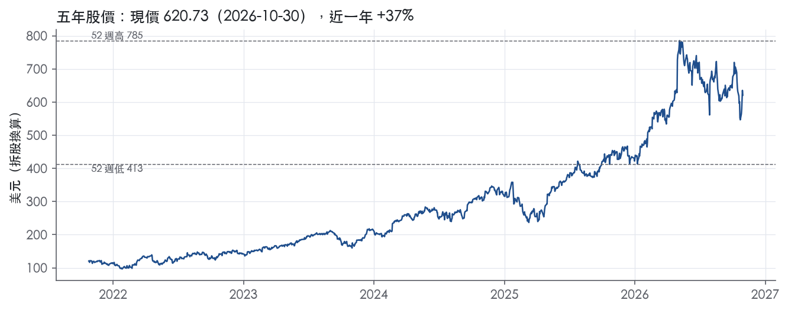

評等總表 › 工業 › PWR
成長兌現抵倍數壓縮，中性｜評等 中立｜目標價 690
| 報告日 | 評等 | 目標價 | 當時股價 | 超額報酬 |
|---|---|---|---|---|
| 2026-10-30 | 中立 | 690 | 621 | +1.2% |
| 評等 | 中立 |
| 12 個月目標價 | 690 美元 |
| 現價 | 620.73 美元（2026-10-30） |
| 預期報酬 | 股價 +11.1%＋股息 0.1%＝總報酬 +11.2%；同業籃門檻 10.0%，超額 +1.2% |
| 估值方法 | P/E 38.0x，套在第 5–8 季的EPS（也就是一年後的未來四季） |
| 三情境 | 熊 366／基準 685／牛 947 |
| 研究流程 | 四位研究員兩輪辯論＋研究總監裁決 |
| 資料來源 | SEC EDGAR XBRL、Tiingo、FRED（全免費） |
成長兌現抵倍數壓縮，中性（研究總監裁決，四位研究員兩輪辯論後）
評等 中立｜12 個月目標價 690 美元（總監三情境機率加權 695 與研究員中位數 685 各半）｜現價 620.73（2026-10-30）
預期報酬：股價 +11.1%＋股息 0.1%＝總報酬 +11.2%。同業籃門檻 10.0%，超額 +1.2%。
估值方法：P/E 38.0x，套在第 5–8 季的EPS（也就是一年後的未來四季）。三情境：熊 366（16%）／基準 685（61%）／牛 947（23%）。
什麼會讓研究總監改變看法：FY2026Q4 營益率低於 6.2% 或 2027 年 2 月 FY2027 指引營收成長低於 15%，我轉空；FY2027 上半年扣除併購的有機成長仍高於 20% 且 FY2026 ROIC 高於 11%，我把倍數錨上移到 P90 轉多。
| 過去四季（實際，FY2026Q3） | 未來四季 | 第 5–8 季 | 第 9–12 季 | |
|---|---|---|---|---|
| 營收（B） | 37.3B | 48.5B | 56.4B | 59.8B |
| 營收成長 | 37.1% | 30.0% | 16.4% | 6.0% |
| 營業利益率 | 6.8% | 7.0% | 7.0% | 7.0% |
| EPS（美元） | 11.05 | 15.41 | 18.04 | 19.06 |
| EPS 成長 | 63.5% | 39.5% | 17.1% | 5.7% |
| 每股股息（美元） | 0.44 | 0.44 | 0.44 | 0.44 |
| P/E（現價） | 56.2x | 40.3x | 34.4x | 32.6x |
| 股息殖利率（現價） | 0.1% | 0.1% | 0.1% | 0.1% |
過去四季為申報數字；預測為研究總監的假設、程式計算。倍數與殖利率都用現價計算，用來看現價對應各期獲利的高低。
| 情境 | 機率（歷史） | 故事 | 未來四季營收成長 | 第 5–8 季營益率 | 倍數 | 目標價 | 股價漲跌 |
|---|---|---|---|---|---|---|---|
| 熊 | 16%（13%） | 風險表第 1 條固定價格 EPC 超支以 cumulative catch-up 回沖、983.6M 未核准變更單回收不足，疊加第 3 條公用事業資本支出遞延；對應本行下行路徑 GDP 0.3、利差 2.30，倍數落在前瞻帶 P50 以下 | 22.0% | 6.0% | 28.0x | 366 | -41.0% |
| 基準 | 61%（65%） | Q4 指引隱含營收與 Q3 同量級，2027 回到中段雙位數成長，營益率 7.0% 不再擴張，倍數由 P90 回到 P75 | 30.0% | 7.0% | 38.0x | 685 | 10.4% |
| 牛 | 23%（22%） | 有機成長維持 15% 以上、Q3 的 8.5% 營益率成新常態、自施作壓低外包比例，倍數回到 P90 與市場持平附近 | 30.0% | 8.0% | 44.0x | 947 | 52.6% |
目標價由程式依研究總監的驅動與倍數計算；機率由研究總監給定。括號內是歷史頻率：把這檔股票過去十年 12 個月報酬的波動形狀，置中在基準情境，結果落在各情境附近的比例。

四位研究員用不同方法各自估值，回應研究總監的質疑後交出第二輪，最後由總監逐點裁決。各研究員的主張見第七章，裁決理由見第八章，完整論證見《研究底稿》。
| 立場（一輪→二輪） | 加權目標價（一輪→二輪） | 評等（一輪→二輪） | 第二輪倍數 | 熊～牛目標價 | |
|---|---|---|---|---|---|
| R1 成長與敘事 | 看多→看多 | 714→733 | 加碼→加碼 | 38.0x | 374～1007 |
| R2 資本報酬與價值 | 看空→看空 | 595→639 | 減碼→減碼 | 38.0x | 355～840 |
| R3 盈餘品質與下檔 | 中性→看空 | 596→606 | 減碼→減碼 | 35.0x | 366～814 |
| R4 市場隱含預期 | 看多→看多 | 720→731 | 加碼→加碼 | 38.0x | 396～947 |
| 研究總監裁決 | 中性 | 690 | 中立 | 38.0x | 366～947 |
目標價由程式依各自的驅動與倍數計算；評等＝機率加權總報酬 − 同業籃門檻。
Quanta Services 是一家靠併購滾雪球長大的專業基礎設施服務承包商，核心是把電力、通訊、地下管線、能源與工業基礎設施的設計、採購、施工、維護整合成一站式解決方案。公司客戶主要包括公用事業、再生能源開發商、科技公司、通訊業者、工業公司與能源輸送公司，主要據點在美國、加拿大與澳洲¹。十大客戶合計占 FY2025 合併營收 30%¹。公司另以 LUMA 等合資企業參與波多黎各等海外基礎設施營運，暴露在額外的政治與營運風險之下¹。FY2025 營收 28.48B，較 FY2024 的 23.67B 成長 20.3%（／）。
10-K 揭露公司以 Electric 與 Underground and Infrastructure 兩大分部運作，但本次抄錄的 Item 1 原文段落未附分部營收占比數字，10-K 未揭露具體分部拆分金額。Electric segment 聚焦電力輸配、變電站及相關電網基礎設施，近期併購（如 Fort Worth 的鋼製單桿塔製造商、Phalcon、Percheron、PSD）多數併入此分部，強化其自我施作（self-perform）craft-skilled 能力²。Underground and Infrastructure segment 涵蓋地下管線、工業與油氣相關服務，暴露於油氣商品價格與產量波動的風險¹。公司併購策略的核心敘述是：組建跨電氣、機械、製造領域的深度自我施作能力，而非集中在單一終端市場或客戶類型²。約 20% 的服務外包給分包商，部分是因客戶與法規要求（例如多元化供應商比例），外包服務毛利率通常較低，會影響整體獲利能力¹。FY2025 海外營運（主要加拿大與澳洲）貢獻合併營收 2.00B，占比 7.0%¹。
客戶集中度本身是風險項，但長期關係穩固，公司透過 MSA（master service agreements）與項目制合約對接公用事業與大型基礎設施業主¹。公司以無擔保方式對客戶授信，且常見客戶延後付款至專案里程碑完成或整案完工，並保留部分 retainage 直到專案結案¹。FY2025 底未核准變更單與索賠金額達 983.6M¹；未完成履約保證金（performance bonds）估計約 14.9B¹。FY2025 RPO 與 backlog 規模持續擴大，FY2026Q2 總 backlog 來到 53.4B（記錄值）、RPO 33.6B（記錄值）²；FY2026Q3 RPO 進一步衝到 41.8B、backlog 63.7B，雙雙創紀錄³。地理上公司仍以美國本土為主，海外（加拿大、澳洲為主）占比約一成以內。
FY2025Q4 營收 7.84B，年增 19.7%，EBITDA 0.74B（is/bs 資料包 FY2025Q4 欄）。FY2026Q1 營收 7.87B，年增 26.3%，但營益率降至 4.3%、EPS 僅 1.45，單季獲利能力明顯季節性轉弱（FY2026Q1 資料包欄）。FY2026Q2 營收 9.56B，較去年同期 6.77B 大增，GAAP 稀釋 EPS 2.96 創紀錄，調整後 EPS 4.24，淨利 451.4M，調整後 EBITDA 約 1.1B，營運現金流 1.1B、自由現金流約 0.9B，RPO 33.6B、總 backlog 53.4B 均創紀錄²。管理層當季表態「鑑於超預期表現、對下半年更佳的能見度，以及近期完成併購帶來的貢獻，我們大幅上修 2026 全年財務展望」²。FY2026Q3 營收 12.01B，較去年同期 7.63B 大增，GAAP 稀釋 EPS 4.55、調整後稀釋 EPS 6.06，歸屬普通股淨利 694.9M，調整後 EBITDA 約 1.4B，營運現金流 1.5B、自由現金流約 1.2B，RPO 41.8B、總 backlog 63.7B 再創紀錄³。公司同時將 2026 全年營收展望上修至 41.3B–41.6B，歸屬普通股淨利展望上修至 1.92B–1.98B，稀釋 EPS 展望 12.57–12.97、調整後稀釋 EPS 展望 17.90–18.30，全年調整後 EBITDA 展望 4.40B–4.49B，自由現金流展望 2.50B–3.00B³。管理層並表示「鑑於此超預期表現以及第四季預期的增量強度，我們再次大幅上修 2026 全年所有指標的財務展望」³，並認為「2027 年調整後 EPS 有機會實現強勁雙位數成長，由持續的 backlog 成長支撐」³。
公司自己的說法是：「組合的廣度，加上技能勞動力在多個終端市場之間的可替代性，提供了顯著的競爭優勢，讓我們能策略性地將資源部署到需求最強的地方、減緩對單一市場週期的暴露，並為客戶與股東帶來更一致、可預期的結果」³。公司表示其對公用事業、科技、工業終端客戶的需求正在擴大，且「正超前於 2026 年投資者日所提出的多年期成長目標」³。在併購層面，公司明確表述策略是「執行多年期策略，組建跨電氣、機械與製造領域的深度自我施作、技能勞動力能力，而非集中在單一終端市場或客戶類型」²，並透過 Phalcon、Enerfab、Percheron、PSD 等併購擴大資料中心、工業製造與澳洲市場的佈局²。公司也強調與 Hyosung 合資在美國本土製造高壓斷路器，以強化供應鏈自主能力，回應資料中心與電氣化帶動的用電需求成長²。公司財務彈性方面，2026 年 8 月發行 2.00B 優先票據、將循環信用額度上調至 2.98B、並於 9 月提前還清 618.8M 的定期貸款餘額，同時獲 Moody's 將無擔保票據評等上調至 Baa2³,²。整體看，Quanta 的成長敘事是「併購擴充自我施作能力＋電網與資料中心用電需求結構性成長＋backlog 可見度」三段式疊加，目前驗證度高（連續三季 double-digit 成長並上修全年指引），但 trailing P/E 56.2x、EV/EBITDA 26.9x 已處於 5 年分位數 60–80% 區間，估值已price in 相當多樂觀情境，後續能否維持雙位數 EPS 成長將是股價續航力的關鍵。

Quanta 評為無護城河：ROIC 有資料的九年中只有一年高於資本成本，我們沒有把握未來 5 年 ROIC 能穩定站上資本成本。趨勢評為變寬，依據是 ROIC 從 FY2022 的 7.3%升到 FY2024 的 10.3%，技能勞工短缺也讓大型承包商的規模更有價值。升到窄護城河的條件是 ROIC 在非景氣高峰年度也能連續高於資本成本，目前還沒有出現這種情況。
Quanta 有兩類看得到、但都不夠強的優勢：成本優勢（勞工與擔保的規模）和無形資產（安全與執行聲譽）。轉換成本和網路效應沒有證據支持，所以不列。
成本優勢：技能勞工與擔保能力的規模
無形資產：安全紀錄與聲譽
為什麼不列轉換成本
數字不支持寬或窄護城河：ROIC 十年平均 8.7%，低於 10.0% 的資本成本代理值，兩者差 -1.3%，九年中只有一年高於資本成本。
最大的威脅是成本優勢本身帶有週期性：勞工短缺帶來的議價力，會在客戶資本支出降溫時消失。
Quanta 沒有可以撐住長期超額報酬的護城河，目標倍數相對同業應給持平，不應以護城河名義溢價。目前 P/E 56.2x（px 快照）已高於 5 年中位數 51.3x，也遠高於 10 年中位數 31.1x，這段溢價反映的是電網與資料中心景氣的成長，不是競爭優勢的持久性。DCF 的超額報酬期應設短，ROIC 應較快收斂到資本成本；除非 ROIC 在景氣降溫後仍高於資本成本，否則不宜延長高倍數的維持年限。
| 指標 | 最新 | 十年平均 | 標準差 | 最低 | 最高 |
|---|---|---|---|---|---|
| ROIC | 9.6% | 8.7% | 1.0% | 7.3% | 10.3% |
| 毛利率 | 15.0% | 14.1% | 0.8% | 13.1% | 15.0% |
| 營業利益率 | 5.7% | 5.0% | 0.6% | 4.0% | 5.7% |
| FCF 利潤率 | 5.7% | 3.7% | 2.3% | 0.6% | 7.6% |
| ROE | 12.7% | 10.7% | 1.8% | 7.9% | 13.3% |
程式計算。資本成本代理值（10 年債＋5%）：10.0%；ROIC 平均減資本成本：-1.3%；ROIC 有資料的 9 年中，高於資本成本 1 年。
Quanta 的盈餘品質在量化計分表上呈現「八綠二黃一紅」，而且那一個紅旗並非現金斷流訊號，是資產負債表結構性變化【判，量化底稿】。公司現金流持續超過淨利、應計比率連續為負、SBC 占營收不到 1%，這些是支撐「高品質」評等的核心證據【判，量化底稿】。真正該盯的是槓桿因 2026 年發債而上升、股東回饋比例長年走低，這屬於資本配置選擇而非盈餘造假問題。
現金流持續領先淨利，不是單季現象。LTM 營業現金流／淨利為 2.42x，近三年均值 2.19x，十年均值 1.83x，三個窗口都是綠燈且逐步墊高【判，量化底稿】。自由現金流／淨利 LTM 1.88x，近三年 1.58x，十年 1.07x，同樣是遞增的綠燈格局，顯示扣掉資本支出後現金體質也在變好，不是靠壓低資本支出撐出來的假現金流【判，量化底稿】。應計比率 LTM 為 -7.8%，近三年 -5.9%，十年 -3.9%，持續負值代表現金流入長期超過帳列淨利，盈餘不是靠應計項目堆出來的【判，量化底稿】。拉到單季看最新一季（FY2026Q3），營業現金流 1.45B、自由現金流 1.19B、淨利 0.69B，現金流對淨利的覆蓋倍數在營收爆發式成長（年增 57.4%）下依然成立（資料包摘要），說明高速擴張並沒有吃掉現金品質。
GAAP 與調整後 EPS 的落差在本季明顯放大。第三季 GAAP 稀釋 EPS 為 4.55 美元，調整後稀釋 EPS 為 6.06 美元³；累計九個月 GAAP 稀釋 EPS 為 8.97 美元，調整後為 12.98 美元³。這個缺口（單季約 25–30%）主要發生在公司連年密集收購的背景下——FY2025 全年完成八筆收購，2026 年至 9 月再完成五筆、加上 9、10 月又完成兩筆¹³。新聞稿正文本身沒有附上逐項調整金額的文字敘述（明細在另附的對照表中，本次節錄未包含），因此無法逐項列出攤銷、重組等金額，但從收購頻率與規模判斷，調整項目大概率以收購相關的無形資產攤銷與整合費用為主。值得放心的是，SBC／營收 LTM 僅 0.7%、近三年與十年均為 0.6%，股權酬勞占比極低，不是調整後數字被灌水的來源【判，量化底稿】。整體看，GAAP 與非 GAAP 的落差主要是併購會計造成的非現金項目，而非把真實現金成本（如 SBC）排除在外的操作。
槓桿因發債而走高，但利息保障能力沒有跟著惡化。淨負債最新為 4.68B，較 FY2024 的 3.42B、FY2025 的 5.56B 有波動（資料包摘要）；淨負債／EBITDA LTM 為 1.28x，反而低於近三年均值 1.84x 與十年均值 1.62x，三者皆落在綠燈區，顯示 EBITDA 成長速度蓋過了債務增幅【判，量化底稿】。公司在 2026 年 8 月發行 2.00B 美元優先票據，7 月把循環信用額度從 2.80B 提高到 2.98B 並展延到期日至 2031 年 7 月，8 月把商業票據上限同步提高到 2.98B，9 月 1 日則全數提前償還 618.8M 美元定期貸款餘額³。這是一次流動性結構優化，不是財務壓力下的被動舉債。利息保障倍數 LTM 為 8.30x，仍達到綠燈門檻（≥8.00x），雖然近三年均值 6.28x 低於十年均值 11.2x，反映近年槓桿本就偏高，但覆蓋能力仍充足【判，量化底稿】。資本配置上，（股利＋回購）／淨利 LTM 只有 3.9%，近三年 10.5%，遠低於十年均值 36.2%，黃燈成因是公司把現金留下來做收購（FY2025 八筆、2026 至今七筆）而非回饋股東，這是成長期公司常見的選擇，不代表舉債發股利的風險情境。稀釋股數年變動 LTM 僅 0.2%，近三年 0.7%，黃燈幅度很小，且 10 月的 Fort Worth 收購對價中有約 149M 美元以 Quanta 普通股支付，是稀釋的主因，屬於用股票買資產而非濫發股票稀釋老股東³。
盈餘品質整體偏高，估值錨點可以用 GAAP 數字，調整後 EPS（如本季 6.06 美元）可作為成長趨勢的輔助參考，因為 GAAP 與非 GAAP 落差主要來自併購無形資產攤銷等非現金項目，而非把真實成本（SBC 占比僅 0.7%）排除在外，不需要對盈餘做額外打折。目前 trailing P/E 56.2x、EV/EBITDA 27.3x 分別處於五年分位的 62.8%、71.6%，估值已不便宜，但這是成長與品質溢價的反映，不是盈餘品質問題導致的虛高。槓桿目前不構成倍數上限的硬約束（淨負債／EBITDA LTM 1.28x、利息保障 8.30x 均為綠燈），但若存貨與應收成長持續快於營收，或 2026 年發債後槓桿不回落，則應視為估值倍數的下行風險，建議在敏感度分析中保留一個槓桿轉差的情境。
| 項目 | LTM | 近三年 | 十年 | 燈號 | 規則 |
|---|---|---|---|---|---|
| 營業現金流／淨利 | 2.42x | 2.19x | 1.83x | 綠 | ≥1.00x 綠、<0.80x 紅 |
| 自由現金流／淨利 | 1.88x | 1.58x | 1.07x | 綠 | ≥0.90x 綠、<0.60x 紅 |
| 應計比率（(淨利−CFO)／平均總資產） | -7.8% | -5.9% | -3.9% | 綠 | ≤0.0% 綠、>5.0% 紅 |
| SBC／營收 | 0.7% | 0.6% | 0.6% | 綠 | ≤3.0% 綠、>8.0% 紅 |
| 淨負債／EBITDA | 1.28x | 1.84x | 1.62x | 綠 | ≤1.50x 綠、>3.00x 紅 |
| 利息保障倍數（營業利益／利息） | 8.30x | 6.28x | 11.2x | 綠 | ≥8.00x 綠、<3.00x 紅 |
| 稀釋股數年變動 | 0.2% | 0.7% | -0.4% | 黃 | ≤0.0% 綠、>3.0% 紅 |
| （股利＋回購）／淨利 | 3.9% | 10.5% | 36.2% | 黃 | ≥50.0% 綠、<0.0% 紅 |
| 應收帳款成長 − 營收成長（FY2025） | +12.1pp | — | — | 黃 | ≤5pp 綠、>15pp 紅 |
| 存貨成長 − 營收成長（FY2025） | +22.0pp | — | — | 紅 | ≤5pp 綠、>15pp 紅 |
程式計算；燈號以 LTM（無則近三年平均）判定。
| 風險 | 觸發指標（看什麼數字、在哪裡看） | 對 EPS 的影響方向與粗略幅度 | 未來 12 個月發生機率（高／中／低） | 出處 |
|---|---|---|---|---|
| 固定價格／EPC 大型專案成本超支、液定損害賠償 | 季度營益率（10-Q）；FY2026Q1 營益率已降至 4.3%，對比 Q2 7.3%、Q3 8.5%（財報） | 負向，中～大：單季營益率可在 4.3%–8.5% 間擺動約 4 個百分點 | 高 | ⁴ |
| 操作危害（野火、爆炸）責任超出保險覆蓋 | 新聞中關於野火訴訟、傳票、defense tender 的揭露；captive insurance 每次事故上限 70.0M 美元 | 負向，大但低頻：單一野火判決可能造成一次性鉅額減損 | 中 | 10-K 年報 FY2025 Item 1A（風險因素） |
| 客戶集中度與公用事業資本支出週期性 | 最大客戶占營收比、前十大客戶占營收比（年報揭露）；FY2025 分別為 8%、30% | 負向，中：單一大客戶縮減資本支出可直接打到營收成長率 | 中 | 10-K 年報 FY2025 Item 1（業務） |
| 併購整合風險／商譽與槓桿上升 | 淨負債（資料包 px.net_debt）、每年新增併購筆數（10-K Item 1 揭露） | 負向，中：整合不順會壓低新併入業務的毛利率，拖累合併營益率 | 中 | 10-K 年報 FY2025 Item 1（業務） |
| 工會勞動力與 craft skilled labor 短缺推升成本 | 工會覆蓋員工占比（年報揭露 36%）；集體協議到期日 | 負向，中小：人力成本上升若無法轉嫁客戶，壓縮毛利率 | 中 | 10-K 年報 FY2025 Item 1（業務） |
固定價格／EPC 大型專案的執行風險是目前最該盯的一項，因為它已經不是假設性風險，而是在今年財報裡實際出現過。公司在 Item 1A 明確寫出，大型固定價格合約（尤其是電力輸電、變電站、資料中心、發電 EPC 專案）規模持續擴大，而這類合約的投標涉及複雜的定價與範疇估算，成本可能與原始估計出現重大偏離⁴。資料包顯示 FY2026Q1 營益率驟降到 4.3%，遠低於同年 Q2 的 7.3%、Q3 的 8.5%，顯示公司自己承認的「季度營運結果可能有重大差異」在今年已經兌現過一次。監測方式很直接：每季財報公布後看營益率是否偏離近四季均值超過一個百分點，以及管理層是否在法說會提到特定專案延誤或液定損害賠償。
操作危害（野火、爆炸等）責任風險的機率不算高，但一旦發生衝擊非常大，屬於尾部風險而非常態波動。10-K 明確寫出，公司在美國、加拿大、澳洲的客戶營運電力與天然氣基礎設施，而這些基礎設施是近年多起野火事件的起火源，公司作為承包商（檢測、施工、維護）已多次收到 tender of defense、文件保存要求與傳票⁴。公司透過自有captive insurance 承保，但每次事故上限僅 70.0M 美元，超過部分才靠超額保險¹。監測指標是公司是否新增重大訴訟揭露（Item 3 Legal Proceedings）或保險費率／可承保額度的變化。
客戶集中度風險值得放進前五，但影響幅度中等，因為公司客戶base夠分散，不是單一巨頭依賴型。10-K 揭露 FY2025 最大客戶占合併營收 8%，前十大客戶合計占 30%¹，比許多產業集中度低，但「公用事業和電力」類別仍占總營收 70%¹，意味著公用事業資本支出週期（例如利率上升導致的資本支出遞延）仍能系統性影響整體營收成長率。監測指標是逐年公布的最大客戶／前十大客戶占比變化，以及公用事業類別占總營收比重是否下滑。
併購整合風險是公司成長模式的另一面：Quanta 的擴張高度依賴併購（FY2025 完成 8 筆、2026 前九個月完成 5 筆）¹³，淨負債已從 FY2024 的 3.42B 升到最新 4.68B。公司自己在 10-K 的風險摘要中列出「我們無法成功執行併購策略可能不利於我們的成長」⁴。監測指標是淨負債／槓桿趨勢，以及新併入業務是否被計入既有分部而未單獨揭露毛利率（整合不順的早期訊號通常是毛利率波動）。
工會勞動力與技術勞工短缺風險機率中等、幅度中小，但是結構性問題。10-K 揭露約 36% 員工受集體協議覆蓋，且公司自己承認「客戶對勞動資源的需求可能超過供給」¹。監測指標是集體協議到期時程表（10-K 附註）以及公司是否在法說會提及人力成本或招募困難。
估值已處於近五年高分位，是放大所有上述風險的乘數效應。目前 trailing P/E 56.2x、EV/EBITDA 26.9x 分別位於近五年分位數 62.8%、71.6%（／），遠高於 10 年中位數的 31.1x 與 17.9x。在這個估值水準下，任何一季的執行瑕疵（如前述固定價格專案成本超支）都可能被市場解讀為成長故事破滅，觸發倍數壓縮而非單純的 EPS 下修，EPS 本身小幅不如預期，股價跌幅可能遠大於 EPS 的跌幅。
另一個公司沒有直接點出、但資料本身已經顯示的，是季度獲利的高波動性本身構成一種「可被市場誤讀」的風險。FY2026 單一年度內 EPS 從 Q1 的 1.45 一路衝到 Q3 的 4.55（資料包 FY2026Q1–Q3 欄），波動幅度遠高於過去幾年同期模式，熊市情境下任何一次低於預期的季度都可能被過度解讀為成長趨勢反轉，即便公司全年指引仍在上修。
現價 620.73 對應 trailing（過去四季）P/E 56.2x、EV/EBITDA 26.9x、EV/EBITA 30.8x、EV/Sales 2.6x、FCF 殖利率 3.4%。主要估值倍數 P/E 現在 56.2x，落在5 年區間第 63 百分位（P10／P50／P90 = 36.3x／51.3x／77.6x）。

把程式的機械基準預測放到現價下，市場付的前瞻倍數是：P/E（未來四季） 42.6x、P/E（第 5–8 季） 36.3x。反推 DCF 顯示市價隱含未來五年營收年成長 20.7%（WACC 9.0%、終值成長 3.0%、FCF 利潤率 5.7%，SBC 不加回）。
| 倍數 | 現在 | 5 年 P10 | 5 年 P50 | 5 年 P90 | 現在分位 | 全期 P50 |
|---|---|---|---|---|---|---|
| P/E | 56.2x | 36.3x | 51.3x | 77.6x | 62.8% | 31.1x |
| EV/EBITDA | 27.3x | 17.5x | 22.5x | 35.1x | 71.6% | 17.9x |
| EV/EBITA | 31.2x | 22.2x | 27.9x | 41.3x | 64.1% | 22.7x |
| EV/EBIT | 39.1x | 30.1x | 35.8x | 53.5x | 63.0% | 30.9x |
| EV/Sales | 2.7x | 1.5x | 1.9x | 3.2x | 81.7% | 1.5x |
| P/S | 2.5x | 1.3x | 1.7x | 3.0x | 83.0% | 1.3x |
| P/FCF | 30.0x | 27.7x | 42.6x | 124.4x | 17.0% | 39.8x |
trailing 倍數（股價 ÷ 過去四季）；分位以每個交易日計算。
同業籃：EME, FIX, MTZ, PRIM, ACM（手動名單（playbooks/peers.yaml））。評等門檻 10.0%：同業「倍數不變下持有一年」的隱含報酬中位數（＝ FCF 殖利率 ×(1＋g)＋g，g 為 5 年營收年複合成長並夾在 −2%～8%），每家夾在 0～15%、P/E 低於 5 倍視為資料可疑而排除，中位數再限制在 10 年債到 10 年債＋5% 之間（同業原始中位數 10.9%）。
| 代號 | 市值 | 5 年營收 CAGR | 營益率 | ROIC | P/E | 5 年 P/E 中位數 | EV/EBITDA | P/FCF | 隱含報酬 |
|---|---|---|---|---|---|---|---|---|---|
| PWR | 93.5B | 20.5% | 6.8% | 9.6% | 56.2x | 51.3x | 26.9x | 29.6x | 11.6% |
| EME | 29.9B | 14.1% | 10.4% | — | 19.7x | 21.2x | — | 20.2x | 13.4% |
| FIX | 43.1B | 26.1% | 16.7% | 73.3% | 26.6x | 27.5x | 18.1x | 17.7x | 14.1% |
| MTZ | 14.9B | 17.7% | 4.7% | 8.4% | 30.4x | — | 13.8x | 36.7x | 10.9% |
| PRIM | 3.9B | 16.8% | 2.9% | 17.8% | 28.5x | 17.7x | 14.3x | 44.5x | 10.4% |
| ACM | 8.2B | 4.0% | 4.1% | 23.6% | 29.0x | 35.8x | 11.6x | 40.1x | 6.6% |
| 同業中位數 | 16.8% | 4.7% | 20.7% | 28.5x | 24.4x | 14.1x | 36.7x | 10.0% |
全部 trailing，程式以各公司 SEC XBRL 與 Tiingo 行情計算；第一列為本檔。
P/E 相對同業中位數：現在 96.9%，過去 1 年平均 175.3%、3 年 121.9%、5 年 121.9%；EV/EBITDA 相對同業中位數：現在 93.7%，過去 1 年平均 92.2%、3 年 61.9%、5 年 57.7%。

事後實現前瞻倍數帶（P/E，2018-11-19..2025-11-17）：P10／P50／P90 = 12.6x／31.1x／42.3x。它是每個交易日的股價除以之後四季實際實現的指標；一年後，今天的第 5–8 季正是那時的未來四季，所以這條帶是 12 個月目標價的同口徑倍數。因為用的是事後實際而非當時預期，過去成長超乎預期的公司這條帶會偏低。
程式的機械基準（成長率從過去四季年增率三年收斂到 6%、利潤率持平）用 事後實現前瞻 P/E P50 估值得到 531（-14.5%），市場現行前瞻倍數（現價 ÷ 基準 未來四季指標）一年後持平，套在基準 第 5–8 季指標得到 727。這兩個數字只是參考點，不是本報告的目標價；研究員對這個定價的回應在第七章。
下表是每位研究員第一輪（各自獨立）與第二輪（回應研究總監的質疑後）的結果。目標價全由程式依各自的假設計算。
| 立場（一輪→二輪） | 加權目標價（一輪→二輪） | 評等（一輪→二輪） | 第二輪倍數 | 熊～牛目標價 | |
|---|---|---|---|---|---|
| R1 成長與敘事 | 看多→看多 | 714→733 | 加碼→加碼 | 38.0x | 374～1007 |
| R2 資本報酬與價值 | 看空→看空 | 595→639 | 減碼→減碼 | 38.0x | 355～840 |
| R3 盈餘品質與下檔 | 中性→看空 | 596→606 | 減碼→減碼 | 35.0x | 366～814 |
| R4 市場隱含預期 | 看多→看多 | 720→731 | 加碼→加碼 | 38.0x | 396～947 |
| 研究總監裁決 | 中性 | 690 | 中立 | 38.0x | 366～947 |
目標價由程式依各自的驅動與倍數計算；評等＝機率加權總報酬 − 同業籃門檻。
分歧度：第一輪 加權目標價 595～720（區間＝現價的 20%）· 倍數 35～44x · 立場 看多×2、看空×1、中性×1；第二輪 加權目標價 606～733（區間＝現價的 21%）· 倍數 35～38x · 立場 看多×2、看空×2。

| 研究員 | 第二輪主張 | 堅持的理由 |
|---|---|---|
| R1 成長與敘事 | 溫和看多，目標倍數 38 倍，營益率下修到 7.0%。 | Q4 指引與 2027 上半年併購併表，撐住營收成長 32%，他不降。 |
| R2 資本報酬與價值 | 相對同業看空，目標倍數 38 倍，倍數不再往上加。 | ROIC 9.6% 低於資本成本，資本報酬沒改善，市場就不該付更高倍數。 |
| R3 盈餘品質與下檔 | 看空，目標倍數 35 倍，四人中最低。 | Q3 是高原不是起點，併購紅利消失後 2027 營收成長只剩 13.5%。 |
| R4 市場隱含預期 | 溫和看多，目標倍數 38 倍，低於市場持平的 42.6 倍。 | 第三年營收成長維持 12%，因為過去 9 年有 7 年超過 12%。 |
每位研究員的逐條回應與完整論證見《研究底稿》（PWR_研究底稿_2026-11-01.docx）。
| 分歧點 | R1 | R2 | R3 | R4 | 什麼資料會分出勝負 |
|---|---|---|---|---|---|
| NTM 營收成長 y1 | 32%：Q4 指引隱含營收遠高於 FY2025Q4、併購 2027 上半年才完整併表 | 26.8%：指引與 backlog 和基準方向一致 | 26.8%：沿用，但自己的「Q3 高原」論其實隱含更高 | 30%：指引隱含 Q4 與 Q3 同量級 | 2027-02 的 FY2026 實際營收與 FY2027 指引 |
| Q5–Q8 營收成長 y2 | 16.4%（基準）：backlog 支撐 | 14%：併購基期消失 | 13.5%：併購紅利耗盡、高原 | 16.4%（基準）：70% 受管制資本計畫 | 有機成長拆分；RPO 是否續增；FY2027Q3 營收年增 |
| 營益率 y1／y2 | 7.0／7.3：費用槓桿 | 6.8／6.8：6.8% 已高於十年最高 | 7.0／7.0：Q4 指引隱含擴張已停 | 7.2／7.3：Q4 淨利高於去年同季 | FY2026Q4 營益率對 6.2%、FY2027Q1 對 4.3% |
| 目標倍數（eps@q5_q8） | 38x（P75） | 38x（P75，ROIC 封頂） | 35x（P50–P75：類股已重估、營益率高點） | 38x（P75，低於市場持平 42.6x） | 一年後 PWR 對同業溢價是否收斂；FY2026 ROIC |
| 熊情境機制與倍數 | 31x；公用事業資本計畫下修、y2 4%／y3 0% | 28x；本行下行路徑、無風險表 | 28x；風險表第 1＋3 條、983.6M 變更單回收不足 | 29x；Item 1A catch-up 損失 | FY2026 10-K 未核准變更單金額；任一季 catch-up 損失 |
y1 營收成長：採 R4 的 30%。 決定性證據是 Q4 指引這個硬錨：全年營收展望 41.3B–41.6B 減去九個月的 29.45B³，R4 推得 Q4 營收與 Q3 的 12.01B同一量級，R1 推得遠高於 FY2025Q4 的 7.84B。基準模型的線性收斂法把降檔起點放在已經過去的 Q3，所以 26.8% 低估了起碼一季。R2、R3 沿用基準的缺口在這裡：兩人都沒對照 Q4 隱含值，R3 的「Q3 是高原」若成立（Q4 與 2027 各季維持 Q3 量級），隱含的 NTM 成長本身就高於 26.8%，驅動與論點不自洽。R1 多出的 2pp 依賴 Phalcon、Enerfab 在 2027 上半年完整併表，但這批併購預估全年營收只有 1.2B–1.4B²，且 Q3 基期已含部分貢獻，2027 前三季又沒有指引，證據撐不住再加碼。預測紀錄上四位研究員營收誤差都偏低（−0.4% 至 −0.7%），往上修方向正確，但 R1 的幅度要等 FY2027 指引。
y2 營收成長：採 R1／R4 的基準 16.4%。 RPO 由 33.6B²升至 41.8B、總 backlog 63.7B³，遠高於 LTM 營收 37.29B，管理層明示 2027 調整後 EPS 強勁雙位數成長由 backlog 支撐。R2、R3 的「併購基期消失」是真的，但基準已經把成長從 26.8% 線性壓到 16.4%，這 10pp 的降幅已把基期效應吃進去，再砍是重複懲罰；R2 營收預測勝過基準只有 46%、R3 誤差中位數 −0.7% 偏低，下修要更強的證據而他們只有一個未經拆分的併購數字。本行工業指引的「週期性訂單下修」我沒有套在基準：「公用事業和電力」占營收 70%¹，由受監管多年期資本計畫驅動，資料中心客戶的資本支出也不跟 GDP 1.8 走；程式算的總經敏感度 t 值 0.5、−0.3，不可靠。30% 工業與其他曝險的總經風險放進熊情境。
營益率 y1／y2：採 R3 的 7.0%／7.0%。 R1 自己用指引算出 Q4 EBITDA 年增幅度與營收年增相近、EBITDA 率與 FY2025Q4 持平，等於承認擴張在 Q4 已經停；R4 用淨利推出 Q4 利潤率改善，兩人都從同一組指引出發，GAAP 營益率落在兩者之間，Q2 由 5.5% 升至 7.3%、Q3 由 6.8% 升至 8.5%（dv.operating_margin 各季）的年增節奏到 Q4 已經收窄。預測紀錄更是決定性的：R1 營業利益誤差 +2.6%、R4 +1.8% 系統性偏高，R3 +0.6% 最小，R1／R4 的 7.3% 修正偏差後已貼近 7.0%。本行前提通膨黏 3%、勞工成本「subject to market conditions」¹，也不支持外推擴張。R2 的 6.8% 缺口相反：NTM 會用一個不低於 6.2%的 Q4 取代去年 Q4，LTM 6.8% 不會往下走，且 R2 營業利益誤差 −1.1% 偏低。附帶更正風險章：FY2026Q1 4.3% 被寫成「骨折」，但 FY2025Q1 只有 3.8%，Q1 是季節性低點而非執行瑕疵，風險表第 1 條「已兌現」的說法不成立，但 Item 1A 的固定價格合約風險本身仍在。費用槓桿機制放進牛情境。y3 我自己設 7.0%（假設）與 y2 持平，不外推不回落，不影響主尺。
目標倍數：採 R1／R2／R4 的 38x。 錨是事後實現前瞻 P/E 帶 P75 38.1x。高於 P50 的理由三人一致：EPS 從 1.90到 6.80再到 LTM 11.05持續超預期，這條帶有向下偏誤。不到 P90、低於市場持平 42.6x 的理由必須是個股因素：ROIC 9.6%低於資本成本代理 10.0%、九年中只有一年過關（護城河章）；同業逐家看 EME 19.7x 低於自身 5 年中位數 21.2x、FIX 26.6x 低於 27.5x、ACM 29.0x 低於 35.8x，只有 PRIM 28.5x 高於 17.7x，而 PWR 56.2x 高於自己的 51.3x——被推高的是個股不是類股。R3 的 35x 兩條理由都被這組證據打掉：「類股已重估」依賴失真的中位數 28.5x 對 24.4x，「營益率十年高點」我已經在驅動用了保守的 7.0%，再壓倍數是重複懲罰。另外點出 R1 第二輪仍把「帶的期間利率較低、10 年債 4.98」列為不到 P90 的理由，這是利率重複計算，我剔除這條，但他其餘兩條足以支撐 38x。
熊情境：採 R3。 R3 是唯一把熊情境明確對應風險表（第 1 條固定價格 EPC、第 3 條公用事業資本支出遞延）並給出可追蹤傳導路徑的人：983.6M 未核准變更單與索賠¹回收不足、retainage 卡住現金。28x 落在前瞻帶 P50 以下的理由由 R2 補齊——衰退期實現盈餘低於預期，帶的偏誤反轉，會高估真實前瞻倍數。R1 的 y2 4%／y3 0% 太嚴：R2 引 FY2020 衰退年營收 −7.5%但那年沒有 41.8B 的 RPO 在手；R4 的 29x 與 R3 接近但看不到風險章；R2 熊自稱「無風險表」。
漂移與總經偏離。 R2 向中位數靠攏 37%，但他的四條接受全部附證據，倍數 36x→38x 來自我提出的 V2（刪除利率重複計算）與 V3（我轉發的量化底稿證明現金轉換為結構性），屬於新證據驅動，不退回。R1、R3、R4 靠攏比例分別為 −17%、8%、−9%，無漂移。drift_rejections 為空。四位均未申報總經偏離；R4 不用 GDP 1.8 壓 y3 與 R2／R3 熊情境對應本行下行路徑，都在前提框架內，接受，macro_deviations 為 []。
與機械基準不同的驅動：
目標倍數 38x GAAP EPS，第 5–8 季 口徑，錨事後實現前瞻 P/E 帶 P75 38.1x；程式檢查表顯示它相對市場持平倍數 42.6x 低 11%、高於零報酬倍數 36.3x。相對同業不另設錨：同業 trailing 中位數 28.5x 受 PRIM、MTZ 低利潤率樣本失真，且口徑是 trailing。GAAP 主尺維持：GAAP 與調整後 EPS 指引差距（12.57–12.97 對 17.90–18.30³）主要是併購攤銷，連續收購者的攤銷是成長的真實成本（R3），無形資產占總資產 9.7% 未達扭曲門檻。
機率從歷史基準率出發。程式對各研究員的對照顯示，牛距離 +32% 至 +38%、熊距離 −39% 至 −49% 的組合，歷史落在牛區 22%–25%、熊區 12%–18%；我的牛熊距離由程式計算，落在同一區間。牛 23% 取歷史中值；熊 16% 比對應歷史約高 2pp，理由是公司特有且未進基準驅動：Item 1A 固定價格合約的一次性回沖機制與 983.6M 的存量索賠。偏離均在 10pp 以內，順序牛高於熊，與歷史一致，修正本部過去 22 份報告熊高於牛的偏誤。
市場持平倍數 42.6x 落在前瞻帶 P90，反推 DCF 要求五年營收成長 20.7%，與含併購的過去五年 CAGR 20.5% 相當；我們的差距在倍數而非近端盈餘——Q5–Q8 EPS 因 y1 30% 與 7.0% 營益率高於基準模型的 17.09，但一年後市場看到的成長從 26.8% 降到 16.4%，不會再付 P90。倍數壓縮其實已在進行：trailing P/E 56.2x 在 1 年帶的 0.0% 分位（1y P10 64.7x），現價 620.73 低於 52 週高 785.24。盈餘成長與倍數壓縮大致抵消，預期報酬貼近 10.0% 的同業門檻，立場中性；程式評等若落在門檻任一側，是因為超額報酬為小幅值，加上情境不對稱（熊距離大於牛）與熊對應「高」機率風險，我不把小幅超額當作方向性信號。
現價 620.73 → 點估目標價 685 → 機率加權目標價 695 → 目標價 690，差距拆成五段：成長順延 +107 美元（市場現行倍數 42.6x 一年後持平、獲利照機械基準）；倍數差 -78 美元（總監倍數 38.0x vs 市場持平倍數 42.6x，同一機械基準預測）；盈餘差 +36 美元（總監預測的第 5–8 季EPS 0.0B vs 機械基準 0.0B，同一倍數）；情境不對稱 +9 美元（機率加權減點估）；研究小組平均 -5 美元（總監機率加權 695 與研究員第二輪中位數 685 各半）。各段相加等於目標價減現價。本階段未接賣方共識，差距以市場隱含預期為對照。
| 驅動 | 機械基準 | 研究總監 | 差異 |
|---|---|---|---|
| 未來四季營收成長 | 26.8% | 30.0% | +3.2 pp |
| 第 5–8 季營收成長 | 16.4% | 16.4% | ＝ |
| 第 9–12 季營收成長 | 6.0% | 6.0% | ＝ |
| 未來四季營益率 | 6.8% | 7.0% | +0.2 pp |
| 第 5–8 季營益率 | 6.8% | 7.0% | +0.2 pp |
| 第 9–12 季營益率 | 6.8% | 7.0% | +0.2 pp |
| D&A／營收 | 3.0% | 3.0% | ＝ |
| 資本支出／營收 | 2.5% | 2.5% | ＝ |
| SBC／營收 | 0.7% | 0.7% | ＝ |
| 稅率 | 23.5% | 23.5% | ＝ |
| 股數年變動 | 0.8% | 0.8% | ＝ |
研究總監只寫偏移，未寫的沿用基準。
| 期 | 營收 | 成長 | 營益率 | 營業利益 | EBITDA | EBITA | 淨利 | EPS | FCF | 期末淨負債 |
|---|---|---|---|---|---|---|---|---|---|---|
| 未來四季 | 48.5B | 30.0% | 7.0% | 3.4B | 4.8B | 4.2B | 2.4B | 15.41 | 2.9B | 1.8B |
| 第 5–8 季 | 56.4B | 16.4% | 7.0% | 3.9B | 5.6B | 4.9B | 2.8B | 18.04 | 3.4B | -1.6B |
| 第 9–12 季 | 59.8B | 6.0% | 7.0% | 4.2B | 6.0B | 5.2B | 3.0B | 19.06 | 3.7B | -5.2B |
程式依上表的驅動計算；季度用最近四季季節性分攤；不含營運資金變動。
估值方法：P/E 38.0x，套在第 5–8 季的EPS（也就是一年後的未來四季）。研究總監目標倍數的錨：事後實現前瞻 P/E 帶 P75 38.1x；帶因 EPS 1.90→6.80→11.05 持續超預期而偏低故高於 P50；ROIC 9.6% 未過資本成本、個股高於自身 5 年中位數而同業多數低於，故低於市場持平 42.6x。
計算：EPS（第 5–8 季） 18.04 × 38.0x → 點估目標價 685（10.4%）；隱含 P/E（未來四季）44.5x、P/E（第 5–8 季）38.0x、EV/EBITDA（第 5–8 季）19.0x、FCF 殖利率（第 5–8 季）3.3%。
總監三情境機率加權目標價 695，研究員第二輪中位數 685，兩者各半＝目標價 690；預期報酬 股價 +11.1%＋股息 0.1%＝總報酬 +11.2%；減評等門檻 10.0%（同業籃隱含報酬中位數（EME, FIX, MTZ, PRIM, ACM））＝超額報酬 +1.2% → 評等 中立（超額 >+15% 買進、+5～+15% 加碼、±5% 中立、−5～−15% 減碼、<−15% 賣出）。同一份資料重開研究小組，超額約有正負四個百分點的雜訊（一個標準差，二十檔實測）；以此估計，評等落在其他級距的機率約二成。
| 情境 | 機率 | 未來四季成長 | 第 5–8 季成長 | 第 5–8 季營益率 | EPS（第 5–8 季） | 倍數 | 目標價 |
|---|---|---|---|---|---|---|---|
| 熊 | 16% | 22.0% | 8.0% | 6.0% | 13.08 | 28.0x | 366 |
| 基準 | 61% | 30.0% | 16.4% | 7.0% | 18.04 | 38.0x | 685 |
| 牛 | 23% | 30.0% | 20.0% | 8.0% | 21.53 | 44.0x | 947 |
| 主張 | 驗證日 | 看哪個數字 | 門檻 |
|---|---|---|---|
| FY2026 全年營收不低於指引下緣 | 2027-03-01 | >= 41.3B | |
| FY2026Q4 GAAP 營益率不低於 FY2025Q4 | 2027-03-01 | >= 6.2% | |
| FY2027Q1 GAAP 營益率不低於 FY2026Q1，固定價格合約風險未啟動 | 2027-05-15 | >= 4.3% | |
| FY2027Q3 營收年增維持雙位數中段 | 2027-11-05 | >= 14% | |
| 未核准變更單與索賠未失控膨脹 | 2027-03-01 | FY2026 10-K 未核准變更單與索賠金額 | < 1.5B（假設門檻） |
到期由程式結算（第 5 階段帳本）。
內文上標數字對應下列公司申報文件；未標上標的分析與判斷，是研究小組的觀點。報告中的每個數字都經程式逐一核對資料包或原文。
| 期 | 營收 | 成長 | 毛利率 | 營益率 | EBITDA | 淨利 | EPS | CFO | FCF | ROIC | 淨負債 | 稀釋股數 |
|---|---|---|---|---|---|---|---|---|---|---|---|---|
| FY2016 | 7.7B | — | 13.3% | 4.2% | 0.5B | 0.2B | 1.26 | 0.4B | 0.2B | — | 0.2B | 0.2B |
| FY2017 | 9.5B | 23.7% | 13.1% | 4.0% | 0.6B | 0.3B | 2.00 | 0.4B | 0.1B | 8.6% | 0.5B | 0.2B |
| FY2018 | 11.2B | 18.0% | 13.2% | 4.8% | 0.8B | 0.3B | 1.90 | 0.4B | 0.1B | 7.8% | 1.0B | 0.2B |
| FY2019 | 12.1B | 8.4% | 13.2% | 4.6% | 0.8B | 0.4B | 2.73 | 0.5B | 0.3B | 8.0% | 1.2B | 0.1B |
| FY2020 | 11.2B | -7.5% | 14.8% | 5.5% | 0.9B | 0.4B | 3.07 | 1.1B | 0.9B | 9.1% | 1.0B | 0.1B |
| FY2021 | 13.0B | 15.9% | 15.0% | 5.1% | 1.1B | 0.5B | 3.34 | 0.6B | 0.2B | 7.5% | 3.5B | 0.1B |
| FY2022 | 17.1B | 31.5% | 14.8% | 5.1% | 1.5B | 0.5B | 3.32 | 1.1B | 0.7B | 7.3% | 3.3B | 0.1B |
| FY2023 | 20.9B | 22.3% | 14.1% | 5.4% | 1.7B | 0.7B | 5.00 | 1.6B | 1.1B | 9.8% | 2.9B | 0.1B |
| FY2024 | 23.7B | 13.4% | 14.8% | 5.7% | 2.1B | 0.9B | 6.03 | 2.1B | 1.5B | 10.3% | 3.4B | 0.2B |
| FY2025 | 28.5B | 20.3% | 15.0% | 5.7% | 2.5B | 1.0B | 6.80 | 2.2B | 1.6B | 9.6% | 5.6B | 0.2B |
SEC XBRL；每股數據已依拆股換算到現在股數基準。EBITDA 空白 = 該年無形攤銷在 companyfacts 中缺 tag。
| 期 | 期末 | 推導 | 營收 | 毛利率 | 營益率 | EBITDA | 淨利 | EPS | CFO | FCF | 現金 | 總債務 |
|---|---|---|---|---|---|---|---|---|---|---|---|---|
| FY2023Q4 | 2023-12-31 | Q4 | 5.8B | 13.7% | 5.6% | 0.5B | 0.2B | 1.42 | 1.0B | 0.9B | 1.3B | 4.2B |
| FY2024Q1 | 2024-03-31 | 5.0B | 12.4% | 3.1% | 0.3B | 0.1B | 0.79 | 0.2B | 0.2B | 0.5B | 3.7B | |
| FY2024Q2 | 2024-06-30 | 5.6B | 14.5% | 5.5% | 0.5B | 0.2B | 1.26 | 0.4B | 0.2B | 0.5B | 3.5B | |
| FY2024Q3 | 2024-09-30 | 6.5B | 15.6% | 6.6% | 0.6B | 0.3B | 1.95 | 0.7B | 0.5B | 0.8B | 4.7B | |
| FY2024Q4 | 2024-12-31 | Q4 | 6.6B | 16.2% | 6.9% | 0.7B | 0.3B | 2.03 | 0.7B | 0.6B | 0.7B | 4.2B |
| FY2025Q1 | 2025-03-31 | 6.2B | 13.4% | 3.8% | 0.4B | 0.1B | 0.96 | 0.2B | 0.1B | 0.5B | 4.4B | |
| FY2025Q2 | 2025-06-30 | 6.8B | 14.9% | 5.5% | 0.6B | 0.2B | 1.52 | 0.3B | 0.2B | 0.5B | 4.7B | |
| FY2025Q3 | 2025-09-30 | 7.6B | 15.9% | 6.8% | 0.8B | 0.3B | 2.24 | 0.6B | 0.4B | 0.6B | 5.6B | |
| FY2025Q4 | 2025-12-31 | Q4 | 7.8B | 15.5% | 6.2% | 0.7B | 0.3B | 2.09 | 1.1B | 0.9B | 0.4B | 6.0B |
| FY2026Q1 | 2026-03-31 | 7.9B | 14.1% | 4.3% | 0.6B | 0.2B | 1.45 | 0.4B | 0.2B | 0.4B | 5.9B | |
| FY2026Q2 | 2026-06-30 | 9.6B | 16.2% | 7.3% | 1.0B | 0.5B | 2.96 | 1.1B | 0.9B | 0.5B | 6.1B | |
| FY2026Q3 | 2026-09-30 | 12.0B | 16.7% | 8.5% | 1.3B | 0.7B | 4.55 | 1.5B | 1.2B | 2.3B | 7.0B |
流量項目由 10-Q 的年初至今數拆成單季；Q4 = 年度 − 九個月。

本報告由 equity-desk 多代理系統產出，建置中版本，僅供內部研究與方法驗證，不構成投資建議。所有數字以 datapack.json 為準。